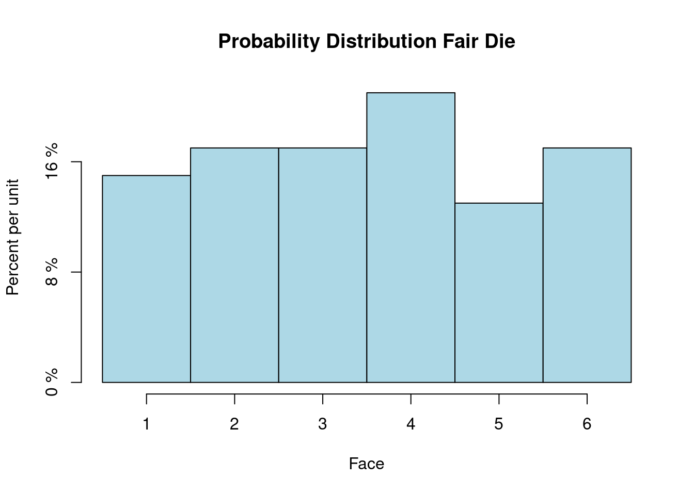
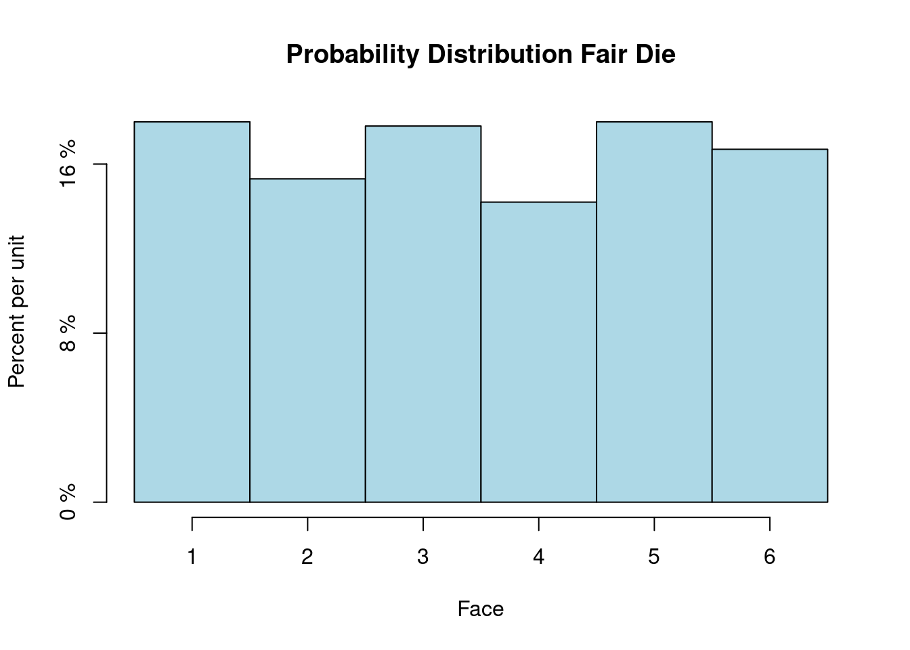
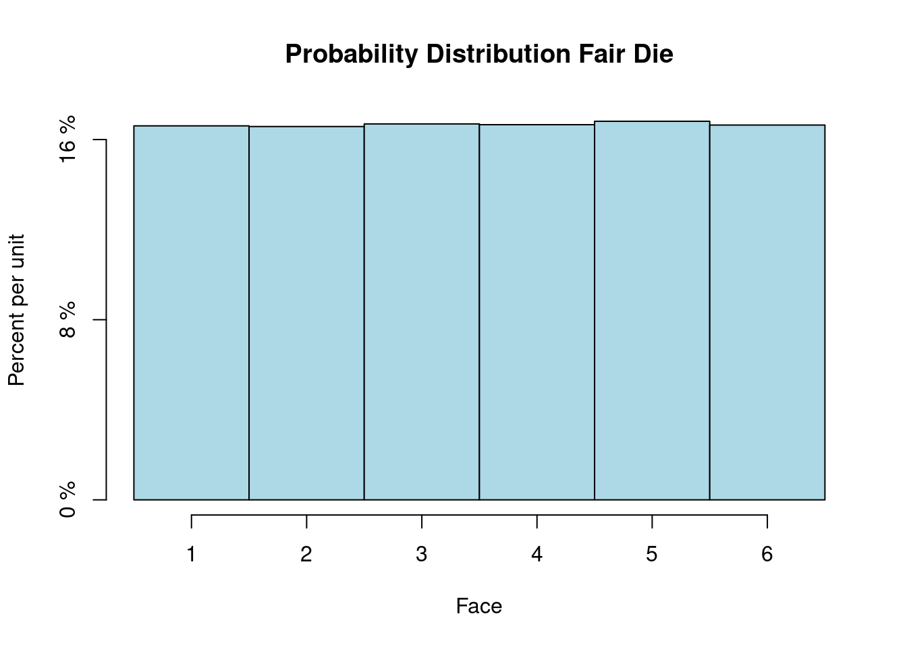
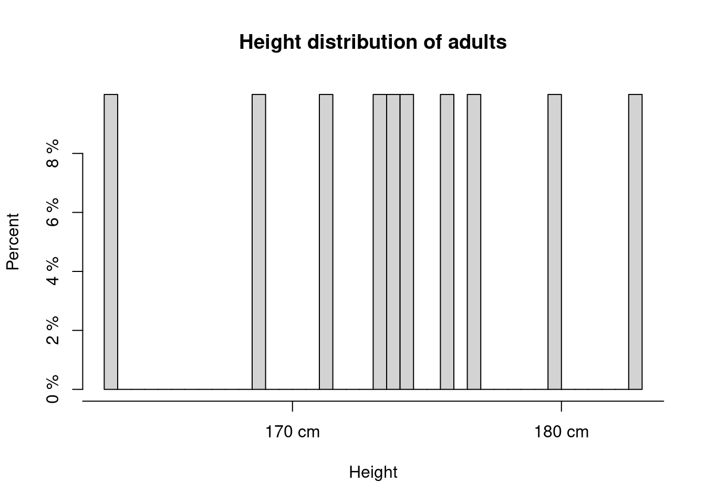
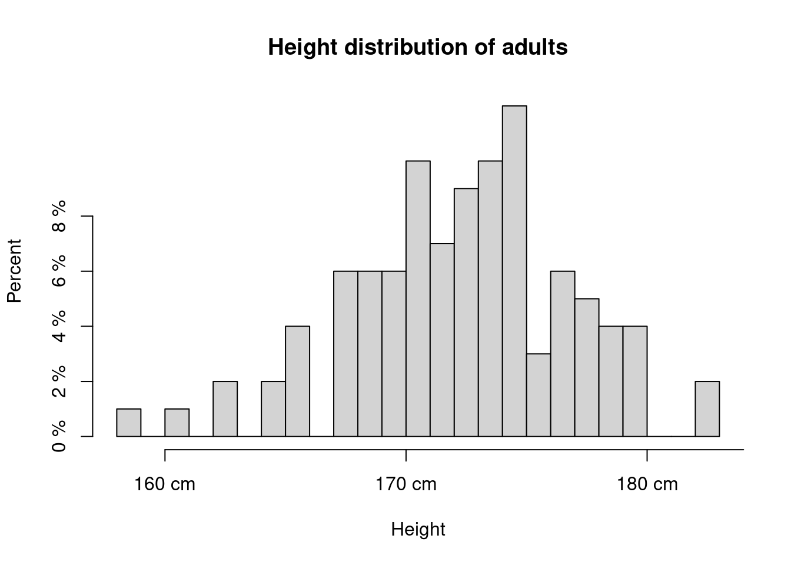
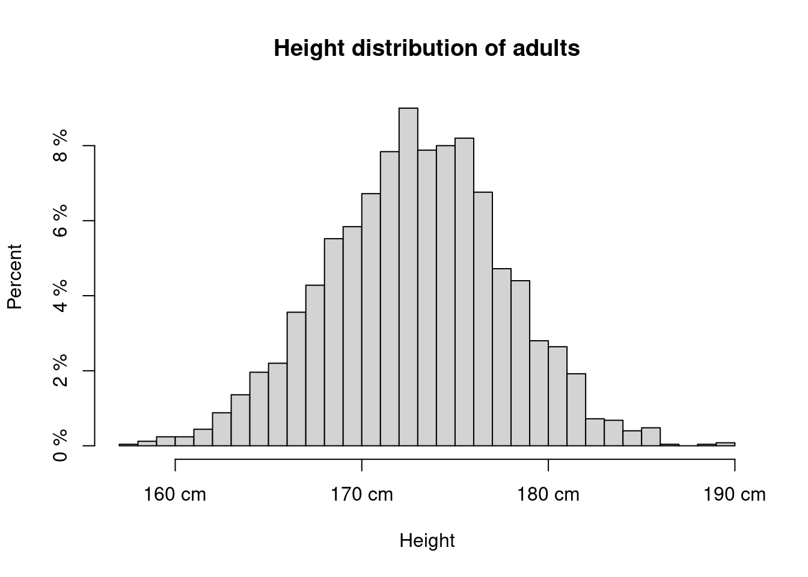
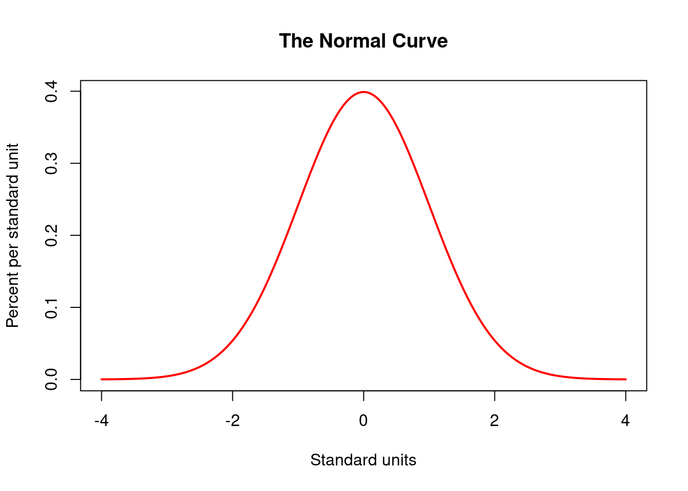

In the last exercise of section 3 we analyzed data from the Demographic and Health Survey.1 We looked at data monitoring of the nutritional state of children by using anthropometric data.¶
1 To learn more about this survey, please visit the DHS website at https://dhsprogram.com/
The data allow for producing tables like - for example - the following from the DHS model data set showing the share of children that are stunted and wasted by region.
Percentage of stunted and wasted children by Region
Region
Stunted
Wasted
Region 1
0.34
0.11
Region 2
0.41
0.10
Region 3
0.30
0.10
Region 4
0.39
0.08
These percentages are calculated from measurements of 2494 observations. Now even a small region in a thinly populated area will have more children than that. For instance the tiny European state of Liechtenstein, a small 62 square miles sliver of land between Austria and Switzerland has currently about 38.000 inhabitants. To a rough approximation even there the number of children under 59 month - the group for which the anthropometric measurments of the DHS were taken - is about this size or larger.
The data of the demographic and health survey are collected by selecting some households in a country and asking questions to their members or by taking measurements from them. This process of asking and measuring not the whole population but a subset of it is called a survey.
Surveys are huge and expensive projects which require complex logistics to work properly. The researchers in such a project are not interested in what particular respondents say or what are their particular anthropometric data are. In fact the individual respondents are anonymous in the collected data set. The questions are asked to find overall patterns in - for example - the nutritional status of children and infants in a country or in an administrative region.
But how can we say something about such a pattern in a country or a region by just asking a group of people or by taking some measurements from them? How can we be confident about the results beyond just claiming that we can generalize from the data of people we asked to the population pattern we are ultimately interested in? How can we ask or measure people in a way that the analysis of data from this subset allows to learn something about these measures in the entire population?
In this section we discuss how such a seemingly magical generalization can work at all and what needs to be considered before making such sweeping generalizations with some level of confidence. We will not learn here exactly how survey, like the DHS are done but use the survey example to introduce you to some general ideas ans principles of going from statements about a subgroup in a population, a sample, to the population as a whole.
The process of going from responses or measurements in a survey to patterns in a country or region proceeds in four stages as explained in Spiegelhalter (2019). We follow here his four stages taking the he DHS as an example.
Stage 1:
In the first stage of the data collection process DHS selects a group of households from the larger population about which we want to learn something. In technical terms the selected group is called a sample and the larger population about we ultimately hope to learn something is called the target population. The sample and all the successful and failed measurements in the sample will give us the raw data. From this we can get information about …
Stage 2:
The true numbers of height and weight in our sample, which contains information about …
Stage 3:
The height and weight in the study population, the people that could have potentially been included in the survey, which contains information about …
Stage 4:
The height and weight of children in our target population.
It is important to understand that at all these stages errors can occur.
For example on the way from the raw data to our sample - the step from stage 1 to stage 2 - we have to make assumptions on how accurately the field workers have taken their height and weight measurements. Or if we ask questions, we need to make assumptions on how accurately people respond.
When we go from the sample to the study population - from stage 2 to stage 3 - we need to be confident that the people asked or measured are a random sample from those who could be asked in principle. We have not yet introduced probability and what we mean exactly with a random sample. But at this stage it is sufficient to rely on our intuitive understanding of what random means and why it is important. Assume the sample had not been selected at random. Say the DHS survey team would drive through a region and stop here and there to interview households. This method risks that some households are much more likely to be in the sample than others - for example the ones who are easy to reach on the road. Then in going from 2 to 3 we will make mistakes because we will measure using a sample that is not comparable to the study population. Even worse we can not even quantify the error we are making.
Random Sample
Now if a survey is done properly and professionally, as we can be confident with the DHS, we can usually assume that a proper random sample has been chosen. But even then we need to assume that the people who agree to take part in the survey, those in our sample that cooperate with the survey team, i.e. answer questions, agree to have anthropometrric measurements taken of their children, are representative. Otherwise comparisons with the larger group about which we ultimately want to say something, will be problematic. Assuring that the people in the sample who cooperate are representative is more difficult to assure. There are methods and procedures to address this difficulty systematically. For the moment it is important for you to recognize this as a potential source of error.
When we assume that the people who could potentially have been asked to participate in the survey represent the population of a country or a region, then the last step - going from stage 3 to stage 4 - is more straightforward. If the sample has been chosen with sufficient care this will be possible. It is, however, not easy in practice.
Considering all these potential sources of error you might become skeptical whether it is possible to say something reliable from limited data about the population at all. The good news is that statistics as a science and the methods you are going to learn during this course can smooth and control the process of going through these four steps where you indeed can say something very reliable and you can even precisely quantify the uncertainty that remains in what you are saying.
Now you try
Assume a farmer wants to know the average yield of some crop - say maize - in a particular region. He cannot measure the yield on each and every field. So he takes a sample. Taking the notions we have explained in the previous discussion, in this example describe in words what precisly is the sample, what is the target population, what is the study population?
Suppose you are a an official statistician in the ministry of education in your country and the minister wants to learn about the avergage performance of students on a standardized test in your countries. Again, assume it is not possible to test all students but only a sample. Taking the notions we have explained in the previous discussion, in this example describe in words what precisly is the sample, what is the target population, what is the study population?
Finally, assume you are the head of a firm and you would like to know the average level of customer satisfaction among your customers. You cannot ask all your customers but only a sample. Explain the meaning of the notions in this context, what is the sample, what is the study population and what is the target population?
4.1 Learning from data and the process of inductive inference.
In the preceding chapters we have looked at examples where we had given data. Analysis of this data was sufficient if we just appropriately summarized them or displayed the data in an insightful way.
Sometimes this is really all there is to do. For instance when we studied the time trend in infant mortality we just looked at the time series of mortality data and a plot showed us the complete answer. The data we previously plotted for Ghana and Kenya - for example - show a steady decrease since 1965 starting from a share of roughly 12 % down below 2 % in 2020. These are data from public registers and not samples. The data are based on a complete set of observations in a country.
Code
library(ggplot2)library(JWL)pl_dat <-with(infant_mortality_data, infant_mortality_data[Country %in%c("Ghana","Kenya") & Year >=1965, ])p <-ggplot(pl_dat, aes(x = Year, y = Mortality, color = Country)) +geom_point() +geom_line() +xlab("") +scale_y_continuous(labels = scales::percent)p
But sometimes we want to say more about the data. We would like - for instance - to make predictions on how, for example, the trend in this share is going to look like in the future where we do not yet have data.
Or maybe we would like to say something more basic. For example why did the share show a long term downward trend in those countries.
Such generalisations, where we try to learn something about the world outside of our observations, based on these observations are called in statistics inductive inference. Inductive inference is a challenging idea and it had been the topic of many philosophical and methodological controversies among scholars in the past.
Deductive reasoning derives particular conclusions from general premises using the rules of logic. In this way if the assumptions hold and the reasoning is done correctly, i.e. the rules of logic are properly applied the conclusions is certain and irrefutable. A toy example of deductive reasoning would for instance be:
Major Premise: All plants perform photosynthesis.
Minor Premise: A cactus is a plant.
Conclusion: A cactus performs photosynthesis.
Modern mathematical reasoning is all built on deduction, allowing to come up with actual proofs of certain statements given a set of axioms or assumptions. A proof is possible because deduction is logically certain.
Inductive reasoning works differently. It starts from particular instances and tries to work out generalizations from there. It goes from data to hypothesis. A simple toy example for inductive reasoning would be:
Data: I see fireflies in my garden every summer.
Hypothesis: This summer I will probably see fireflies in my garden.
Induction does not allow to proof a hypothesis because it is generally uncertain.
Now you try
Think of another example for
deductive reasoning
inductive reasoning.
Let us go back to the entire process of going from the raw data to the statements about the entire country or region in the DHS survey.
When we go from the sample to the true data about the units in the sample, the step from stage 1 to stage 2, we have to think careful about issues or problems of measurement. We want to know whether our data are reliable. They should have a low variability from occasion to occasion and should measure the same thing when we repeat a measurement. They should also measure what we intend or want to measure. This is called validity. We do not want our data to have a systematic bias.
Here is the idea of a random in a stylized picture. The big circle is the frame for the population from which you take a sample. The unit of obervation in the DHS and in this example is a household. The read households are picked at random from the population and put into the sample.
When we take again the DHS as an example, where people are asked many questions and quite a few measurements are taken on individuals, questions should be such that people give the same or a similar answer each time they are asked this question. To some extend this can be tested but these tests are not perfect. We also need to assume that people answer honestly to questions. With measurements things are similar. We want that we get the same or a very similar result if we repeat a measurement and we need to assume that the survey field workers who take the measurements do their job diligently.
If questions would be biased towards a particular answer a survey would also not be valid. This needs special care in developing questions. In chapter 2 we have learned about framing effects. Framing effects are often used in marketing. For example in meat packaging it is well known that how you report certain facts about the packaged meat influences sales. If the same piece of meat is one time packaged with the text “75 % lean meat” and the other time with the text “25 % fat”, which is logically the same information, several studies showed that on average the first package is preferred. This and other details have to be considered when elicting information from the sample.
Now going from the second stage - from the sample - to the third stage - the study population requires particular care. We have to be confident that the sample observed accurately reflects characteristics of the larger group we are ultimately interested in and from which the sample has been taken. Technically this is also often called internal validity.
Here we come to a crucial idea how bias can be avoided, the idea of random sampling. Let us explain exactly what a random sample is. Using R will support us in developing this understanding. As an example data set of our population we use as an illustration in the following discussion, let us take the dataset on the height and weight of adult humans, we used in chapter 3.
Remember that this was a data set with 25.000 observations and three variables, an index for each individual a number of height in cm and weight in kg.2. Let’s look at the first 10 rows in this dataset.
2 Note that the original data set socr_height_weight measures height in inches and weight in lbs. To get cm from inches, we have to multiply by 2.54 and to get kg from lbs we have to multiply the numbers by 0.4535924. In the data we use here we use units of cm and kg
Code
show <-head(dat, n=10)rownames(show) <-NULLknitr::kable(head(show, n=10))
Index
Height
Weight
1
167.0896
51.25254
2
181.6486
61.90960
3
176.2728
69.41184
4
173.2702
64.56226
5
172.1810
65.45207
6
174.4925
55.92903
7
177.2972
64.18092
8
177.8374
61.89826
9
172.4727
50.97122
10
169.6272
54.73372
Each row of this table represents an individual. Each individual here is an adult person age 18 or more for which a measure of height and weight has been taken. So if we sample from the rows of this table, we get values for the index, the height and the weight of individuals.
We could now take samples of rows from the table by selecting every 50th row. Here is a way of how we could implement this in R. If you go back to our last section and remember what we have learned about subsetting, you might get an idea how to approach such a problem.
Let us first create a sequence of numbers starting from 1 and going until the last row in steps of length 5. This can be done without problems because 25000 rows are divisible by 50 and this procedure will select exactly 500 rows. Here is the R code:
idx <-seq(from =1, to =nrow(dat), by =5)sample_1 <- dat[idx, ]rownames(sample_1) <-NULLknitr::kable(head(sample_1, n =5))
Index
Height
Weight
1
167.0896
51.25254
6
174.4925
55.92903
11
168.8787
57.81108
16
180.5727
63.50180
21
172.2978
64.08385
Let me explain. seq() is an R function which creates a regular sequence of numbers. The arguments specify where the sequence begins and where it ends as well as the step length it takes. We write this sequence into a variable idx. Since we do not want row names we delete these. Then we apply the subsetting rules we have learned in the last section to select all rows with index idx with all its variables.
Now you try
You can try this code yourself and apply it to another situation where you would for example select every 100th obervation in the dataframe.
While this is a sample from our population, this is not a random sample because there is no chance involved in selecting the rows. Random sampling is a sampling method that uses a random mechanism. This means that the probability of each unit in the population to become part of the sample is known.
4.2.1 A virtual game of chance: Rolling a die
We have not yet discussed the concept of probability. We will learn about probability later in the course. But we have all am intuitive notion of probability from simple games of chance, such as from rolling a die. If we throw a die the probability of each of the points shown on the die’s faces - 1, 2, 3, 4, 5 or 6 - is \(\frac{1}{6}\). This is the chance or probability we would attribute before throwing the die that it shows a particular number. When we can give a probability for each outcome of throwing a die, we have a probability distribution, which is in this particular example very simple, because the probability we have attributed to the different outcomes is always \(\frac{1}{6}\). The probability of each number showing up is the same, \(\frac{1}{6}\). We can show this in the form of a bar-plot, where each bar stands for an outcome and its height showing the probability of this outcome.
Code
die_out <-c(rep(1,10), rep(2,10), rep(3,10),rep(4,10), rep(5,10), rep(6,10))# create a histogram with 6 columnshist(die_out, breaks =seq(0.5, 6.5, by =1), col ="lightblue", freq =FALSE,xlab ="Face", ylab ="Percent per unit", main ="Probability Distribution Fair Die",axes = F) # add labels below each columnaxis(1, at =1:6, labels =1:6)axis(2, at =c(0,0.08, 0.16), labels =c("0 %", "8 %", "16 %"))
In contrast to this theoretical probability distribution an empirical distribution is the distribution of observed data. We encountered many such distributions in the previous sections and and we have learned how to summarize them graphically by histograms.
The computer allows us to create empirical distributions of results from throwing a virtual die. It is a simulation of a real situation where you would actually roll a six sided die physically.
This is an example which allows us to introduce some new functions and concepts in R, which we will need in the rest of the course.
First we create a virtual die by defining an appropriate R object. This die should represent a physical die, which you know from games of chance.
A die
The essential feature of the die is that it has six faces each showing different points starting from 1 to 6. In R we implement this by creating a vector of integers 1 to 6, like this
die <-1:6
Here we have created the vector of integers 1,2,3,4,5,6 and saved these numbers in an object calles die.
Now R has a built in function, called sample() which can pick values at random from an object. We can tell R by using this function for instance that it should randomly pick a number from the six possible numbers of die.
This is how it works:
sample(x=die, size =1)
[1] 5
The R-function sample() takes an object as argument. The second argument, called size, specifies the number of random picks or draws from the object. If we give the value 1 to size it is as if we threw the die once. We have now implemented in the computer an equivalent to physically throwing a die.
Now you try
In the stylized picture of a random sample, we had 24 households in the population from which we randomly picked a sample of 8. Use the sample function to pick randomly 8 numbers out of the numbers 1 to 24.
One feature that makes R so very powerful is that you can not only use built in functions, like mean, histsample etc. but you can also write your own functions. We could for instance write a function which rolls a die if we call it.
4.2.2 A brief digression: Writing R functions yourself
Each function in R has the same elements: A name, a function body of code and a set of arguments. To write your own function, you have to write up all of these parts and save them in an R object.
The syntax is given like this:
my_function <- function() {}
The name here is my_function, next comes the expression function() which needs to be assigned. The names of the function arguments have to be written between the parentheses. Then we have to write the actual code within the braces {}.
To do this for the die, lets write a function named roll_die
Now we have written the function and saved it as an R-object we can call it like this. Let’s call it three times for example:
roll_die()
[1] 3
roll_die()
[1] 2
roll_die()
[1] 1
Note that in our function roll_die() has no arguments, just the function body. This is perfectly legitimate in R. It is important that when we call the function we have to call it with the parenthesis like roll_die(). If we only call the name roll_die, R will display the code in the function body.
Congratulations ! You have written your first R function for conducting a simple random experiment. Let me remind you once again: Think of the parentheses as a trigger that tells R to run the function. If you omit the trigger R just prints the body of the function. When you run a function, all the code in the function body is executed and R returns the result of the last line of code. If the last line of code does not return a value neither will R.
Let me finally say a few things about arguments in a function.
Imagine we remove the first line of code in our function body and changed the name die in the sample function to “ball”.
roll_die2 <-function(){sample(ball, size =1)}
If we call the function now, we will get an error. The function call roll_die2() will result in the error message Error in sample(ball, size = 1) : object 'ball' not found (try it!)
We could supply ball when we call roll_die2 if we make ball an argument of the function. Lets do this:
roll_die2 <-function(ball){sample(ball, size =1)}
Now the function will work as long as we supply ball when we call the function.
roll_die2(ball =1:6)
[1] 4
Note that we still get an error, if we forget to supply ball argument. This could be avoided if we give the function a default argument
Now we are interested in an empirical distribution of points if we roll the die many times. A built in R function that would help us to do this. This function is called replicate(). It needs two arguments, how many times it should do something and of course what it should do precisely.
So if we roll our virtual die 10 times, we would tell R to do this:
r10 <-replicate(10, roll_die())
which gives us the sequence of results from these 10 rolls. Now let’s plot the empirical distribution.
Code
hist(r10, breaks =seq(0.5, 6.5, by =1), col ="lightblue", freq =FALSE,xlab ="Face", ylab ="Percent per unit", main ="Probability Distribution Fair Die",axes = F) # add labels below each column# add labels below each columnaxis(1, at =1:6, labels =1:6)axis(2, at =c(0,0.08, 0.16), labels =c("0 %", "8 %", "16 %"))
This does look quite different from the theoretical distribution, where each bar had the same length.
When we increase the sample size the empirical distribution starts to look more similar to the theoretical distribution. Lets roll our die 100 times
r100 <-replicate(100, roll_die())
Code
hist(r100, breaks =seq(0.5, 6.5, by =1), col ="lightblue", freq =FALSE,xlab ="Face", ylab ="Percent per unit", main ="Probability Distribution Fair Die",axes = F) # add labels below each columnaxis(1, at =1:6, labels =1:6)axis(2, at =c(0,0.08, 0.16), labels =c("0 %", "8 %", "16 %"))

Looks better. What about 1000 rolls?
r1000 <-replicate(1000, roll_die())
Code
hist(r1000, breaks =seq(0.5, 6.5, by =1), col ="lightblue", freq =FALSE,xlab ="Face", ylab ="Percent per unit", main ="Probability Distribution Fair Die",axes = F) # add labels below each columnaxis(1, at =1:6, labels =1:6)axis(2, at =c(0,0.08, 0.16), labels =c("0 %", "8 %", "16 %"))

As we increase the number of rolls in the simulation, the area of each bar gets closer to 16.67% (\(\frac{1}{6}\)), which is the area of each bar in the probability histogram.
Let’s do a last example with 100.000 rolls to show this
r100000 <-replicate(100000, roll_die())
Code
hist(r100000, breaks =seq(0.5, 6.5, by =1), col ="lightblue", freq =FALSE,xlab ="Face", ylab ="Percent per unit", main ="Probability Distribution Fair Die",axes = F) # add labels below each columnaxis(1, at =1:6, labels =1:6)axis(2, at =c(0,0.08, 0.16), labels =c("0 %", "8 %", "16 %"))

Now we are almost there.
4.2.4 The law of averages
What we have just observed is a demonstration of a famous result of probability theory. We are going to learn about probabilities later in the course. This result, sometimes referred to as the law of averages.3
3 Technically the result is called the weak law of large numbers and was discovered by the Mathematician Jacob Bernoulli in 1713
The law says that if a chance experiment - such as throwing a fair die - is repeated independently and under identical conditions (this means that every repetition is performed in the same way regardless of the other repetitions.), then as we repeat the experiment long enough, the relative frequency of each event
- in our case an event would be that for example the outcome of the die throw is 1 - gets closer to the theoretical probability of the event.
In the example of the die, we just studied by using the simulation capacities of R, we saw that the proportion that the die will land on a face showing 6 will happen in about 1/6 of all rolls.
This law also holds when a random sample is drawn from units of a large population. Let us use the table of heights in cm and weights in kg of 25.000 adults we studied in the last unit. Here we show the fist 10 rows.
Code
library(JWL)data <- socr_height_weight# transfrom to metric units from inches to cm and from lbs to kgdata$Height <- data$Height*2.54data$Weight <- data$Weight*0.4535924head(data, n=10)
Let us remind ourselves, how the histogram of the height-data looked like.
Code
h <-hist(data$Height, breaks =30, plot = F)h$counts <- h$counts/sum(h$counts)*100plot(h, xlab ="Height", ylab ="Percent", main ="Height distribution of adults", axes = F)axis(1, at =c(160, 170, 180, 190), labels =c("160 cm", "170 cm", "180 cm", "190 cm"))axis(2, at =c(0,2,4,6,8), labels =c("0 %", "2 %", "4 %", "6 %", "8 %"))
Let us now think about the 25.000 adults in our data as a population. We draw a random sample from it. When we draw from the population we draw with replacement. This means when a particular individual is selected at one draw, it could in principle be selected also at the next one.
This function draws n random row from our dataframe. Note that n is an argument for the function. The random draws are a dataframe with N row indices, say 10, and then this gives the row index to the dataframe according to the subsetting rules we have learned in the previous section data[rowindex, ]. Since there is no index in the second slot the entire rows will be selected.
Now in analogy to the dice example we can see, that when we increase the number of draws into our sample we come closer to the distribution of the population. By this mechanism a random sample generates a subpopulation with similar distributional properties when the sample is large enough. How much is large enough? For this we need probability theory which we will encounter later in the course.
As with the die, let us start with 10 draws:
hs10 <-emp_distr_height(10)
Code
h <-hist(hs10$Height, breaks =30, plot = F)h$counts <- h$counts/sum(h$counts)*100plot(h, xlab ="Height", ylab ="Percent", main ="Height distribution of adults", axes = F)axis(1, at =c(160, 170, 180, 190), labels =c("160 cm", "170 cm", "180 cm", "190 cm"))axis(2, at =c(0,2,4,6,8), labels =c("0 %", "2 %", "4 %", "6 %", "8 %"))

This does not look very similar to the population distribution.
What about a sample with size 100?
hs100 <-emp_distr_height(100)
Code
h <-hist(hs100$Height, breaks =30, plot = F)h$counts <- h$counts/sum(h$counts)*100plot(h, xlab ="Height", ylab ="Percent", main ="Height distribution of adults", axes = F)axis(1, at =c(160, 170, 180, 190), labels =c("160 cm", "170 cm", "180 cm", "190 cm"))axis(2, at =c(0,2,4,6,8), labels =c("0 %", "2 %", "4 %", "6 %", "8 %"))

Now lets increase to 2500, 10 % of the population.
hs2500 <-emp_distr_height(2500)
Code
h <-hist(hs2500$Height, breaks =30, plot = F)h$counts <- h$counts/sum(h$counts)*100plot(h, xlab ="Height", ylab ="Percent", main ="Height distribution of adults", axes = F)axis(1, at =c(160, 170, 180, 190), labels =c("160 cm", "170 cm", "180 cm", "190 cm"))axis(2, at =c(0,2,4,6,8), labels =c("0 %", "2 %", "4 %", "6 %", "8 %"))

This looks already pretty close. You should by now see what random sampling does for the process of inductive inference. For a large enough random sample, the empirical distribution of the sample resembles the histogram of the population with high probability. Thus if you report summaries of the sample, like its mean and its standard deviation, you will be close to the true values in the population. You will not be exactly there. But since the random mechanism is based on a probability model, where the chance of each unit ending up in the sample is known, we can quantify the uncertainty and the error we make.
How probability arguments work more precisely, we will learn later in the course. For now this brief discussion should have convinced you of the importance of random sampling for making inferences from sample to population and given you an intuition how this works. As a side effect of this discussion you have also learned how to write R functions.
Now you try
Use the emp_distr_height()function we have just written to draw a random sample of n=5000. Compute the mean and the standard deviation of the sample distribution. Compute - or look up in chapter 3 - the mean and the standard deviation of the population data and compare.
Now that we have discussed random sampling, why it is important and how it works, let us finally discuss the last step in the inductive inference chain, going from the study population to the target population. Even if we have a perfect random sample, it might be the case that we were not able to ask the people who we were ultimately interested in. When we can make conclusions on the target population from the study population, we say that we have not only internal but also external validity.
Spiegelhalter (2019), whom we have already cited before gives an example where this problem is particularly extreme. Often scientist who are ultimately interested in humans could onl study animals, as it is often the case in pharmaceutical research.
A bit less extreme but related is a second example Spiegelhalter (2019) gives is the case of drugs tested say only on adults but it is then used also by children. These are problems which cannot entiely be solved by statistical methods but need caution and particular care and caution.
4.3 When all data are available
While surveys are a very important instrument to learn from data about the reality we live in, not all data that are available to us today are surveys. Mainly by the internet and technological development, the omnipresence of sensors and digital devices, we have today many data that are not random samples or which are not based on any sampling at all.
Many data, especially from online commerce are available to platform firms and online shops, for example. The new field of data science git a big push from the attempt to get hold of data created through interactions on the internet and to gain information from these data.
The public sector also collects and stores lots of administrative data in a systematic manner. These are for example data needed to run a social security or pension system, police records, health records, demographic data, land registers and business registers, also data on crime, voters and education. These data are used for policy making, research and statistical analysis. In this case you have all the data.
Having all the data means that the stage of the induction process where we go from a sample to a study population collapses because the sample and the study population are the same.
Still problems can occur. Spiegelhalter (2019) mentions the problem that the police systematically misses cases which the police does not record as a crime or which have not been reported by a victim. These problems make the step of drawing conclusions from the study population to the target population difficult. It is not only police records on crimes. You have analogous problems in all other register data as well. Take population register, as one example. Often certain groups such as homeless people or undocumented immigrants who may be hesitant to register or provide personal information are under-counted. Or you can have inaccuracies in property ownership data in land registers due to incomplete or outdated records, fraudulent transactions, or illegal land occupations. Or in health registers you could have missing or incomplete data on certain health conditions, especially those that are stigmatized or poorly understood, or patients who do not seek medical attention due to lack of access or fear of discrimination.
Of course if we have all the data it is a straightforward process to produce statistics that describe what we have measured. But for broader conclusions we need to be very careful and we need to think about systematic biases and how we can potentially control for them. This always needs our special attention because systematic bias can jeopardize or even invalidate the reliability of our claims.
4.4 The normal approximation for data
We will now discuss an old and powerful concept that helps us in our ultimate aim to describe the target distribution. This is called the normal distribution or often also called the “bell curve”, because of its characteristic shape. We already encountered this distribution in the last exercise of chapter 3, when we worked with the DHS data.
4.4.1 The normal curve
The normal curve was discovered first around 1720 by Abraham de Moivre4 In 1809, the German mathematician Car Friedrich Gauss5, made significant contributions to the concept of the normal curve, which is until today often also referred as a Gaussian curve. He used the curve to model errors in astronomical observations. Around 1870 the Belgian mathematician Adolphe Quetelet6 had the idea of using the curve as an ideal histogram to which historams of empirical distributions could be compared.
4 Abraham de Moivre (1667-1754) was a French mathematician known for his contributions to the development of probability theory and the normal distribution as well as for his work on complex numbers. He is perhaps best known for his discovery of the formula that bears his name, which relates complex numbers to trigonometric functions. De Moivre was also a prominent member of the scientific community in 18th-century Europe and corresponded with many of the leading mathematicians and scientists of his time.
5 Carl Friedrich Gauss (1777-1855) was a German mathematician and physicist who made significant contributions to a wide range of fields, including algebra, number theory, astronomy, and physics. Gauss is considered one of the greatest mathematicians of all time and is known for his contributions to the development of calculus, the discovery of the normal distribution, and his work on the theory of functions. Gauss also made important contributions to the field of astronomy, including the discovery of the asteroid Ceres and the development of a method for calculating the orbits of celestial bodies.
6 Adolphe Quetelet (1796-1874) was a Belgian mathematician, astronomer, and statistician who is known for his work in developing the concept of the “average man” and the use of statistical methods in the social sciences. He is also credited with the development of the body mass index (BMI), which is still widely used today as a measure of obesity. Quetelet was a prominent figure in the scientific community of his time and was a founding member of the International Statistical Institute.
The normal curve has a slightly intimidating equation, which looks as follows \[\begin{equation}
y = \frac{1}{\sigma \sqrt{2\pi}} e^{-\frac{1}{2}\left( \frac{x - \mu}{\sigma}\right)^2}
\end{equation}\]
But don’t be afraid. You do not have to be able to manipulate this equation. This is something that R. We will learn how to do this.7
7 The mathematical formula for the normal curve is very interesting, since it contains the most famous numbers in mathematics. We have already encountered \(\sqrt{2}\), the diagonal of the unit square, which is the first so called irrational number detected by the Pythagoreans in antiquity. For them it was quite a shock to discover that there are numbers which can not be represented as a fraction of whole numbers. There is the famous number \(\pi\) also known since antiquity. This number represents the ratio of the circumference of any circle to its diameter and is also an irrational number. Finally there is the number \(e\) or sometimes also known as Euler’s number. It is the limit of the sequence \((1+\frac{1}{n})^n\) and plays a fundamental role all over mathematics.
Code
x <-seq(-4, 4, length.out =1000)y <-dnorm(x, mean =0, sd =1)plot(x, y, type ="l", lwd =2, xlab ="Standard units", ylab ="Percent per standard unit", main ="The Normal Curve", col ="red")

There are several features of this graph that are important to note:
The graph is symmetric about 0. The part of the curve to the right is a mirror image of the part of the curve to the left.
The total area under the curve equals 1 or 100 %.
The curve is always above the horizontal axis. It appears to get equal to zero between 3 and 4 but this is only because the distance from the horizontal axis becomes too tiny to visualize. Only about 0.00006 of the area under the curve is outside of this interval.
It will be important and helpful to find areas under the normal curve between specified values. For instance:
the area under the normal curve between +1 and - 1 standard deviations from the mean is about 68 %.
the area under the normal curve between -2 and +2 standard deviations is about 95 %.
the area under the normal curve between -3 and +3 standard deviations is about 99.7%
Does this look familiar? If you followed the course until now, you will remember that these are the numbers we encountered with the data on human height. This is because for these data the empirical distribution is such that the respective histogram is very closely approximated by a normal curve.
4.4.2 Units and standard units
Often it is convenient to express the units for the normal curve not in the direct unit in which observations are measures - as for example cm for human height - but in units of standard deviations from the mean.
Conversion to standard units
A value is converted to standard units by checking how many standard deviations it is above or below the average. Values above the average are given a plus sign, values below the average are given a minus sign.
Take an example from our human height data and draw 4 random values from these data, using the emp_distr_height() function we wrote earlier in this chapter say
example <-emp_distr_height(4)example$Height
[1] 170.6928 172.0204 179.4628 168.0772
Let us convert these values to standard units. Let us compute again the mean and the standard deviation of the height data.
m <-mean(data$Height)std <-sd(data$Height)m
[1] 172.7025
std
[1] 4.830264
170.6928 is -0.4161 from the average. In standard units therefore 170.6928 is -0.4161.
Now you try
Convert the other values to standard units. Find the height which is 2.4 in standard units.
Standard units are used in the DHS data on nutrition of children and adults which we worked with in the last exercise of chapter 3. Standard units are also often referred to as the z-score. Let us go back to these data and look at them more closely again.
Let us go back to the histogram of human height we already discussed in the chapter 3.
Code
h <-hist(data$Height, plot = F, breaks =30) hist_breaks <- h$breaks color_list <-rep('#C6E2FF', length(hist_breaks)) color_list[hist_breaks <= m + std] <-'#6C7B8B' color_list[hist_breaks <= m - std] <-'#C6E2FF'par(mar =c(5, 4, 4, 4) +0.3) plot(h, col = color_list, freq =FALSE, xlab =" ", ylab ="Percent per cm ", main ="Height distribution of adults", axes = F)par(new =TRUE) ## Define x and y coordinates for normal curve x <-seq(min(data$Height), max(data$Height), length.out =100) y <-dnorm(x, m, std)# Add normal curve to histogram plotlines(x, y, col ="red", lwd =2, xlab =" ", ylab =" ")axis(side =4, at =c(0,0.02,0.04,0.06,0.08), labels =c("0%", "9.7 %", "19.3 %", "29.0 %", "38.6 %"), ylab ="Percent per standard unit")axis(1, at =c(153.38, 158.21, 163.04, 167.87, 172.70, 177.53, 182.36, 187.19, 192.02), labels =c("153.38 cm", "158.21 cm", "163.04 cm", "167.87 cm", "172.70 cm", "177.53 cm", "182.36 cm", "187.19 cm", "192.02 cm"))axis(1, at =c(153.38, 158.21, 163.04, 167.87, 172.70, 177.53, 182.36, 187.19, 192.02), labels =c("-4", "-3", "-2", "-1", "0", "1", "2", "3", "4"), line =2.5)axis(2, at =c(0,0.02,0.04,0.06,0.08), labels =c("0 %", "2 %", "4 %", "6 %", "8 %"))
There are two x-axis in this figure. On the upper x-axis you see the height in cm. On the lower x-axis you see the height in standard units. Standard unit 1 is at 172.70 + 4.83 or at 177.53 and standard unit -1 is at 172.70 - 4.83 or 167.87.
There are two vertical axis in this figure, one on the left and one on the right. The histogram is drawn relative to the left y-axis, which is in percent per cm. The normal curve is drawn relative to the right one. To see how the scale on the right y-axis matches up, take the top value on each of the two axes: 38.6 % per standard unit matches 8% per cm because there are 4.8 cm to the standard unit. Spreading 38.6 % over one standard deviation is the same as spreading 38.6 % over 4.8cm and that comes to 8% per cm.
We explained before that the area under the normal curve between - 1 and 1 standard deviation from the mean is 68 %. In histogram the area between these values is colored in gray. The historgam follows the normal curve very closely. Sometimes it is a bit above, sometimes a bit below the curve but these deviations balance out. Indeed, if you go back to the previous chapter you see that in the empirical distribution we have indeed 68% of observations exactly between these bounds. So the shaded area in the histogram is to a very good approximation equal to the area under the normal curve and this is where the 68 % come from.
4.4.3 Exercises: Now you try
On a cetrain exam, the average of the scores was 50 and the standard deviation was 10.
Convert each of the following scores to standard units: 60, 45, 75.
Find the scores which in standard units are: 0, 1.5, -2.8
Convert each entry on the following list to standard units (using the average and standard deviation of the list): 13, 9, 11, 7, 10. Find the average and the standard devition of the converted list.
4.5 Finding areas under the normal curve with R
Before the computer became a widely available tool, statisticians used standard tables for finding areas under the curve. Today this is done with a computer. R has built in standard function you can use for this purpose. In this section I show you how.
Example 1:
Say we want to find the area under the normal curve between 0 an 1. Now one way to find this area is to use you knowledge that 68 % of the area under the nomal curve are between - 1 and 1. By the symmetry of the normal curve thus the area between 0 and 1 must be half of this area or 34 %.
When you use R to do this calculation the built in function is called pnorm(). This function gives you the area under the normal curve smaller or equal to a given value \(x\). The default value for the mean \(\mu\) and the standard deviation \(\sigma\) is \(\mu = 0\) and \(\sigma = 1\).
So what we would do is to compute:
pnorm(1) -pnorm(0)
[1] 0.3413447
which gives 0.34 or 34 %.
Example 1: Area under the normal curve between 0 and 1
Example 2:
Find the area between -2 and 1 under the normal curve with \(\mu = 0\) and \(\sigma = 1\).
This problem can be broken down by first computing the area under the normal curve for all values lower than 1 and then the area under the curve for all values lower than - 2 and subtract the latter from the former. In R:
pnorm(1) -pnorm(-2)
[1] 0.8185946
or 82 %.
Example 1: Area under the normal curve between -2 and 1
Example 3:
Find the area to the right of 1 under the normal curve. This can be done by finding the area under the normal curve left from 1 first. Since the total area is 1, it must be the case that 1 minus the value of the area left from 1 is the same as the area right of 1.
Code
1-pnorm(1)
[1] 0.1586553
or 16 %.
Example 1: Area under the normal curve right of 1
4.5.1 Exercises: Now you try
Find the area under the normal curve:
to the right of 1.25
to the left of 0.80
between -0.3 and 0.9
to the left of -0.4
between 0.4 and 1.3
outside -1.5 to 1.5
Fill in the blanks:
The area between +/- under the normal curve equals 68%
The area between +/- under the normal curve equals 75 %.
4.6 The normal approximation for data
In certain cases the normal curve may be used to approximate data. We go back to our example with the data on the height of adult humans.
Say we have the information that the height of adult humans were on average 172.7 cm with a standard deviation of 4.83 cm. Assuming the distribution of the data can be approximated by a normal curve. What is the estimated percentage of humans with a height between 168 and 178 cm?
We can proceed in two steps. First we convert to standard units:
l <- (168-172.7)/4.83u <- (178-172.7)/4.83l
[1] -0.9730849
u
[1] 1.097308
Then use the pnorm() function to estimate the area:
pnorm(u) -pnorm(l)
[1] 0.6984912
which is about 70 %.
Let us check this approximation with the real data. We use logical subsetting to count the share of height values between \(l\) and \(u\).
You see that in this case the approximation works really well. So using the normal approximation we can get a fairly precise generalization from study population to the target population, even though the target population is larger than our study population. What we have done is that we have replaced the histogram of the empirical data by a normal curve before computing areas.
Not all histograms follow a normal curve. But it is a remarkable fact, which we will explore in more detail later in the course, that many histograms do. In this case the mean and the standard deviation are good summary statistics.
4.7 Percentiles
While the mean and the standard deviation are good statistics to summarize data which follow a normal distribution, they are not so suited to summarize other distributions.
Let us go back to one of these distributions we have encountered before: Primary energy consumption per capita in the world in the year 2019.
Code
library(JWL)dat <-with(energy_consumption_per_capita, energy_consumption_per_capita[Year ==2019, ])hist_info <-hist(dat$Cons, plot =FALSE) # Store output of hist functionhist_info$counts <- hist_info$counts /# Compute relative frequency valuessum(hist_info$counts) *100plot(hist_info, freq =TRUE, xlab ="Primary energy consumption in kilowatt-hours per person per year.", ylab ="Percent", main ="Primary energy Consuption per Capita 2019") # Plot histogram with percentages
The average primary energy consumption was 26883.02 kwh per person per year and a standard deviation of 33562.48 kwh per person per year.
If we would just blindly apply a normal approximation using these statistics we would conclude that 21.15 % of countries in the world had a negative primary energy consumption. This does not make sense.
The reason for this nonsensical result is that the distribution depicted by the histogram does not follow a normal distribution. To summarize such distributions, statisticians often use so called percentiles.
Let us first explain what you see in the code snippet. R has a built in functions to compute percentiles. This function is called quantile()and takes the data as the first argumente and then a vector of percentiles in decimal form. For example quantile(dat$Cons, 0.01) would compute the 1 % percentile.
What does this mean? The first percentile in our primary energy consumption distribution is 249.66. This means that in about 1 % of the countries of the world the primiary energy consumption per person per year is 250 kwh or less. 99 % of the countries had a primary energy consumption above that level. The 50 % percentile (0.5) is just the median. The interquartile range is the difference between the 75 % percentile (0.75) and the 25 % percentile (0.25). This is sometimes used as a measure of spread for distributions with long tails, such as in this example.
Sometimes data are distributed like a normal curve and sometimes they are not. We will later discuss a theoretical argument which helps to explain when precisely historgrams should be approximated well by a normal curve.
Spiegelhalter, David. 2019. The Art of Statistcis: Learning from Data. Pelican Books.